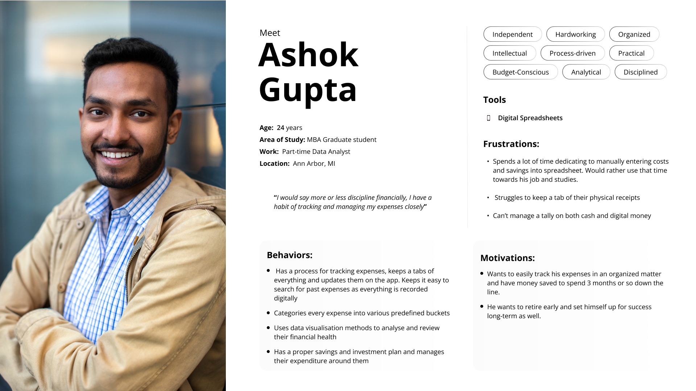
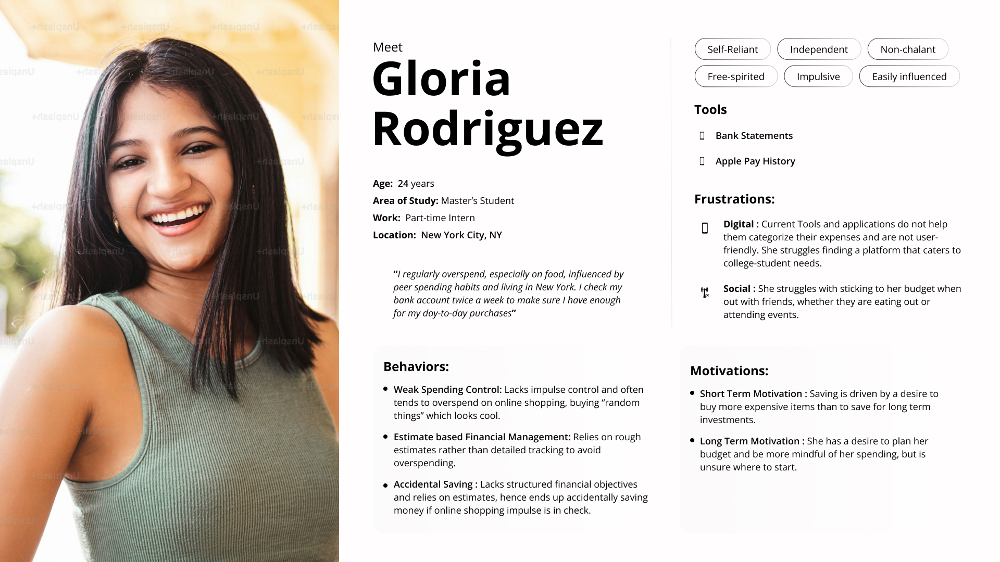
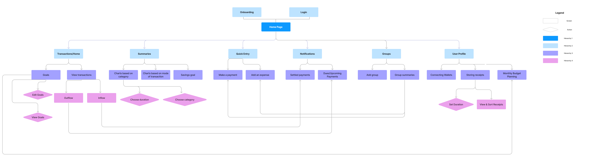
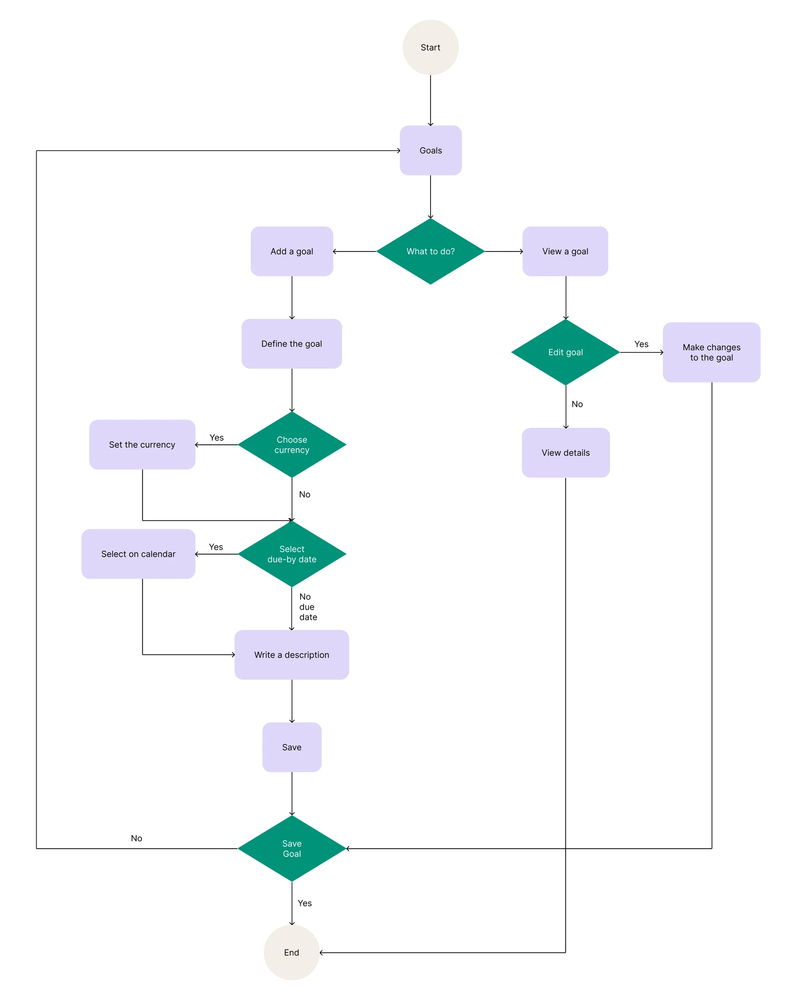
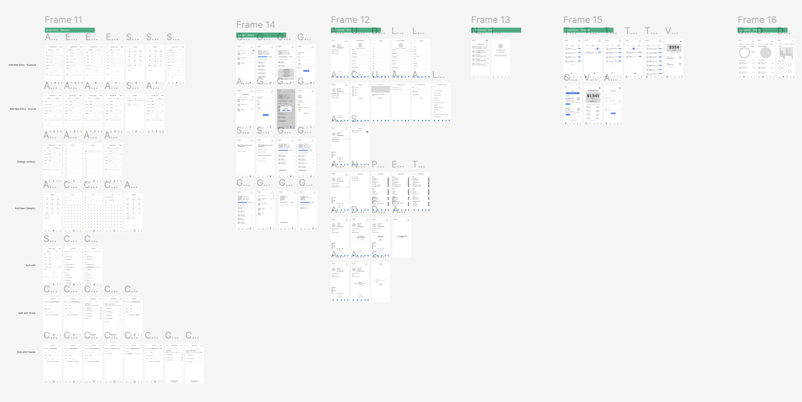
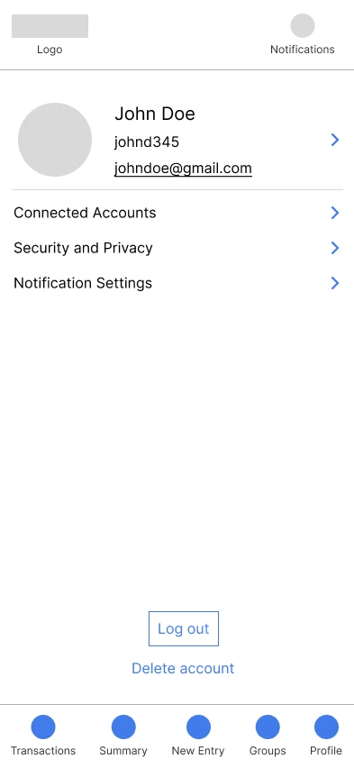
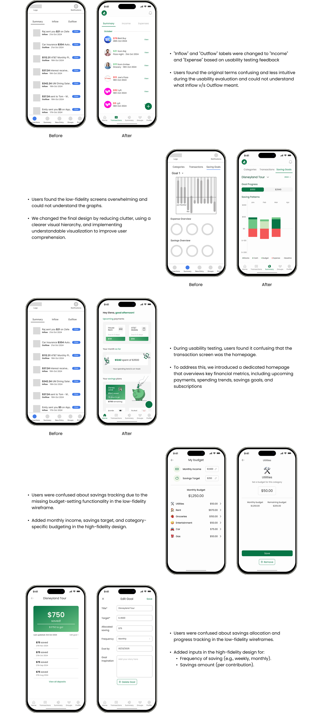
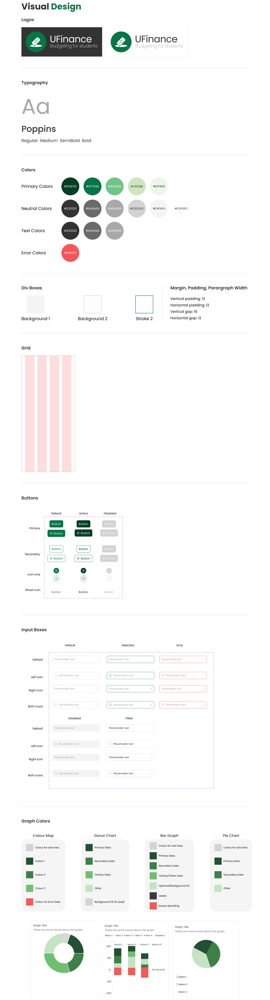

UFinance
Student Budgeting App
UFinance aims to empower students with the tools they need to manage their personal finances efficiently, reduce financial stress, and build better spending habits for the future.

Students often lack clear visibility into their spending.
Without intuitive tools, they fall into habits of overspending, forgetting due payments, and mismanaging money across multiple platforms (e.g., Venmo, Cash App, credit cards).
How might we help students easily track daily spending across categories like food, transportation, and entertainment to plan expenses and identify areas to save?
User Interviews
We interviewed 10 college students (ages 18–26) with varied financial habits and tools (Excel, Mint, pen & paper).
Familiarity Wins Trust 🔨
"I've been using Excel for years. I trust it more than apps because I can see exactly what's happening."
Privacy is Paramount 🔒
"Privacy is always a concern when handling sensitive financial information."
Need for Visual Clarity 📊
"It would be great if apps categorized Venmo payments automatically."
Peer Pressure = Overspending 🛍️
"Living in NYC, it's hard not to overspend — especially with my friends."
Personas
Based on our interviews, we developed two personas to represent the core student archetypes using UFinance.


User Flows and Information Architecture
We first created an Information Architecture of the entire app after a lengthy brainstorming session. We then created certain user flows, including our goals feature displayed below the IA.
Information Architecture

Goals User Flow

Wireframes
Then we sketched wireframes for every single screen across the application.






Usability Testing
10 college students tested our prototype through structured, scenario-based tasks. Scenarios included adding a new expense, creating a group and splitting a bill, connecting a bank account, viewing a spending breakdown, and setting savings goals.
Goals Page
Confusing savings progress visuals made it difficult for users to understand their progress at a glance.
Transactions
Unclear pie charts and terminology left users uncertain about what their spending data meant.
Bank Integration
Poor button placement and navigation flow made connecting a bank account frustrating.
Group Splits
Limited split options and vague language created confusion when dividing expenses between friends.
Based on testing feedback, we made major improvements.
✅ Updated Transaction summary charts to make them more readable
✅ Got rid of confusing transaction home screen and made a dedicated home screen
✅ Improved groups functionality with better split options
Task Analysis

Design Iteration & High Fidelity
With usability insights in hand, we moved from low-fidelity wireframes into high-fidelity mockups. Each iteration was driven by real user feedback — refining layouts, clarifying visuals, and building toward a polished final product. The progression below shows how each screen evolved from rough sketches to the refined designs that made it into the prototype.

Design System

Live Prototype
Interact with the final UFinance prototype below, or open it in Figma ↗.
Outcome & Impact
80%
Increase in confidence
Refined prototypes through three testing cycles, leading to higher usability scores and increased confidence among student participants managing financial budgets.
10/10
User satisfaction
All users were satisfied by the final product and said they would recommend UFinance to other students.
40%
Easier to use
Improvement in perceived ease of use, as measured by post-launch user testing.
Key Learnings
Iteration is Impactful:
Testing, refining, and retesting showed how incremental tweaks (not just big features) can meaningfully boost usability and confidence.
Design for Students, with Students:
Direct collaboration with peers uncovered real budgeting struggles and guided solutions that felt practical, approachable, and empowering.
Clarity Over Complexity:
Even small interface improvements, like visual summaries and clear progress indicators, helped students feel more in control of their finances.